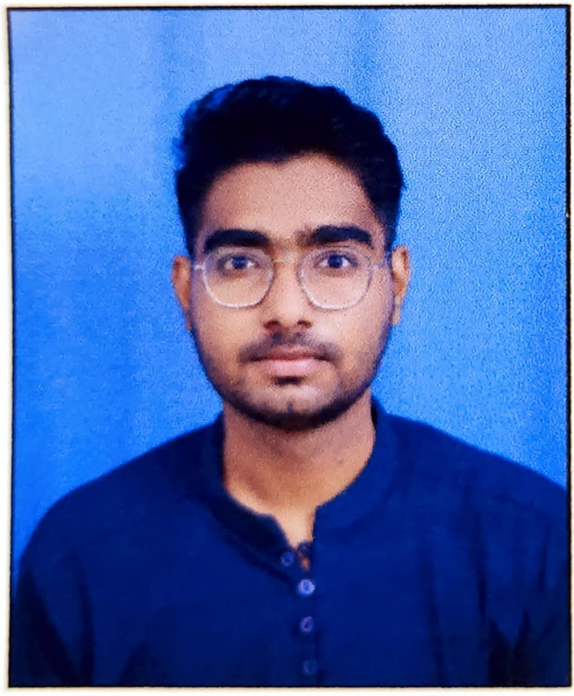
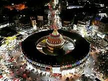
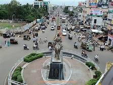
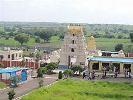
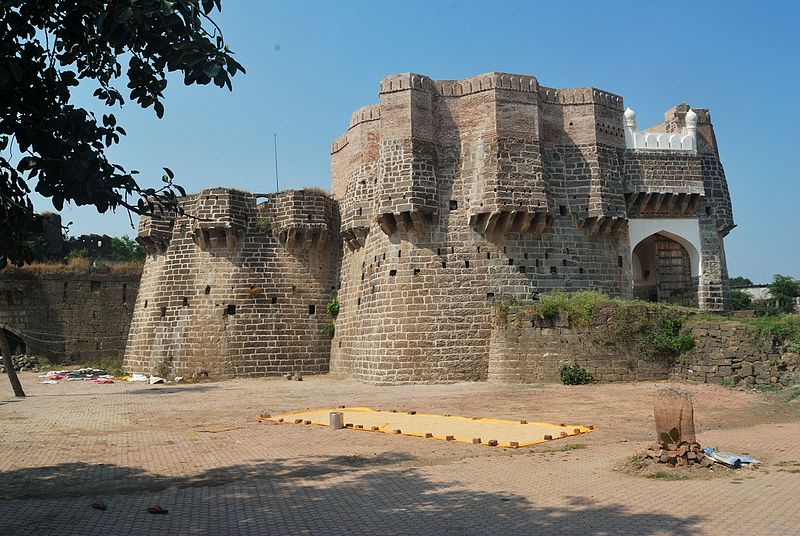
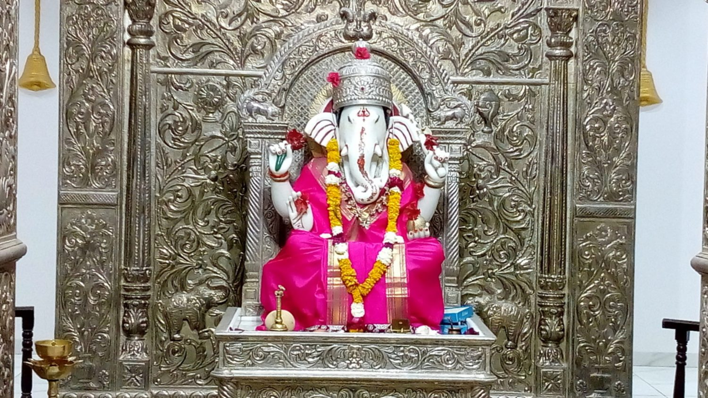

RESUME

- Name: Rohit Padmakar Biradar
- Contact Details: rohit.biradar@walchandsangli.ac.in
- Career Objective: To secure a challenging position that utilizes my years of experience, while allowing me the opportunity to grow professionally.
- Educational Qualifications:
- SSC from Podar International School, Latur with 10 CGPA.
- HSC from Dayanand Science College, Latur with 79%.
- Btech. from Walchand College of Engineering, Sangli with 8.5 CGPA.
- Technical Skills: C, C++, Java, SQL, JavaScript, React
- Certification: Problem Solving
- Products Developed:
- StreamLab - Web-based application with access to teacher to host the classes/workshops,
joining the class for students, feature to ask live queries.
- Co-curricular Activities:
- Attended ‘Inspire Science Camp’ initiated by DST(govt.) in 2017.
- Runner-up at Sandipani Annual Science meet held in Nanded.
- Extra-curricular Activities:
- Design Head at ACSES
- Member at Rotract Club of WCE
- Languages Known: English, Hindi, Marathi
- Interests/Hobbies: Playing Games ,Reading ,travelling
My Hometown information
Latur



Latur is a city in Maharashtra state, India, and It is one of the largest cities of the Marathwada region.
Actually It is 3rd Largest City In Marathwada After Aurangabad And Nanded.the administrative headquarters of Latur
district and Latur Taluka. The city is a tourist hub surrounded by many historical monuments, including Udgir Fort and
Kharosa Caves. The people in Latur are called Laturkar. The most spoken language in Latur is Marathi. The city's
quality of education attracts students from all over Maharashtra.
Places to visit near Latur
1.Ausa Fort – Explore the remnants of the Post-Bahamani Period

Ausa Fort is a famous tourist place in Latur. Constructed in an almost square shape, Ausa fort rose to prominence
during the post Bahamani Period and was captured by Malik Ambar. The fort was constructed with an almost 120-feet deep
moat and was surrounded by high ground on all the sides. The fort houses a Pani Mahal, a number of dried-up wells, a dargah and a
mosque. Visit the Ausa Fort during your trip to the Latur city and explore this historic structure.
2.Ashtavinayak Temple – South Indian Style Temple

Shri Ashtavinayak Mandir is a magnificent temple and a great place to visit near Latur. It has a South Indian influence
and looks more like a South Indian-style temple. It has gardens with artificial fountain giving it a very elegant and
attractive look. A 9-feet tall statue of Lord Shiva is also installed in the garden. As the name suggests, 8 different
idols of the forms of Lord Ganesha are present on the walls and a 4-feet tall marble statue of Ganesh is installed in
the main chamber.
Contact Me